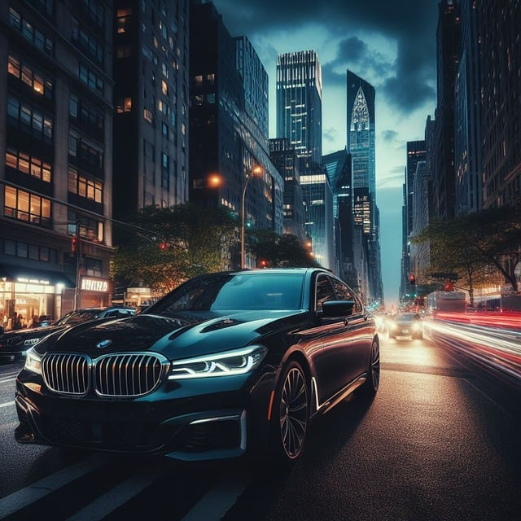
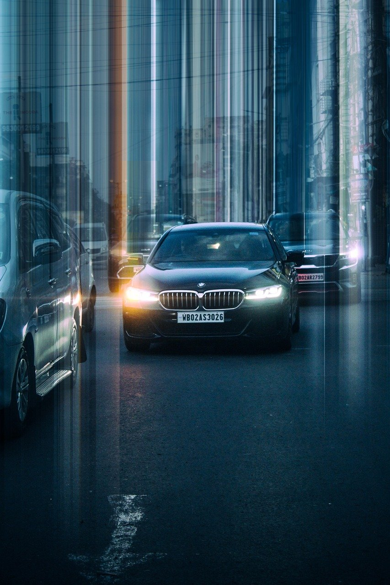

Watch some pictures with outstanding angles of our car.
-

BMW is an abbreviation for Bayerische Motoren Werke
-

The circular blue and white BMW logo or roundel evolved from the circular Rapp Motorenwerke company logo, which featured a black ring bearing the company name surrounding the company logo, on a plinth a horse's head couped.
-

The slogan 'The Ultimate Driving Machine' was first used in North America in 1974.
-

For the fiscal year 2017, BMW reported earnings of EUR 8.620 billion, with an annual revenue of EUR 98.678 billion, an increase of 4.8% over the previous fiscal cycle.